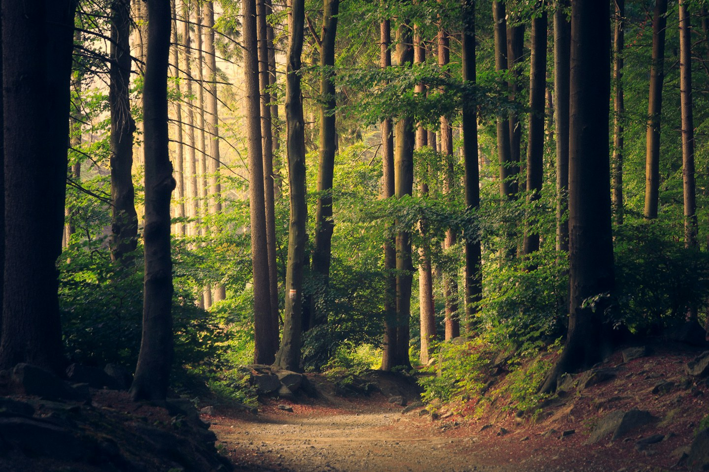

Outside
Walking without a route
A walk usually starts with a destination. The station, the shop, the place where the errands end. The route becomes a strip of ground between one useful thing and the next. There is another kind of walk, though, where choosing the destination can wait.
The first few minutes still feel purposeful. You take the familiar turn and keep the pace that you use when you are going somewhere. Then a quiet side street, a patch of light or a path beneath some trees interrupts the plan. Following it is a small way of letting the surroundings set the rhythm.

A smaller scale of attention
Looking at an entire street makes it seem ordinary. Looking at one thing makes it specific: a gutter carrying last night's rain, a newly painted gate, the shadow of a branch moving across a wall. None of these observations needs to become a photograph or a story. Noticing it is enough.
It helps to leave some space between observations. Stopping at every interesting detail can turn the walk into another task. Keep moving. Let the sound of the street return. Something that matters will stay in mind without being collected immediately.
When to turn back
An open route still needs a practical boundary. Before leaving, choose a rough amount of time and check the weather. In an unfamiliar area, keep the return direction clear. This gives the middle of the walk room to wander without making the end complicated.
The point is not to find somewhere remarkable. It is to become a little less hurried in a place you already know.
Back at home, write down one detail rather than a complete account. A sentence about the colour of the light, or the sound at a crossing, can bring the whole walk back later. The record stays small, and the walk gets to remain a walk.